En JavaScript, los objetos y funciones son conceptos fundamentales que juegan un papel crucial en el lenguaje.
Las funciones en JavaScript son bloques de código que se pueden definir una vez y ejecutar múltiples veces según sea necesario. Son una parte esencial de la programación ya que permiten agrupar instrucciones y reutilizarlas de manera eficiente.
Objeto console
console es un objeto global que proporciona métodos para interactuar con la consola del navegador o el entorno de ejecución en el que se esté ejecutando JavaScript.
console.log(): Este método se utiliza para imprimir mensajes en la consola.
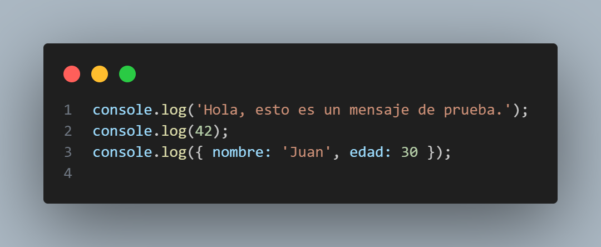
console.error(): Este método se utiliza para mostrar mensajes de error en la consola.
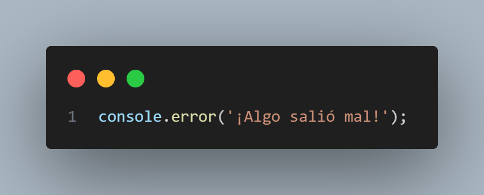
console.warn(): Este método se utiliza para mostrar mensajes de advertencia en la consola.
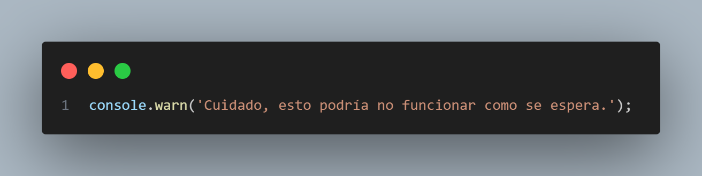
console.info(): Este método se utiliza para mostrar mensajes informativos en la consola.
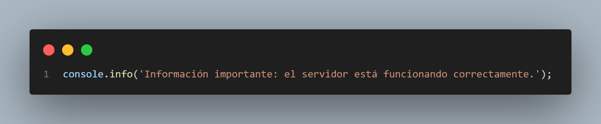
console.table(): Este método muestra datos tabulares en la consola.
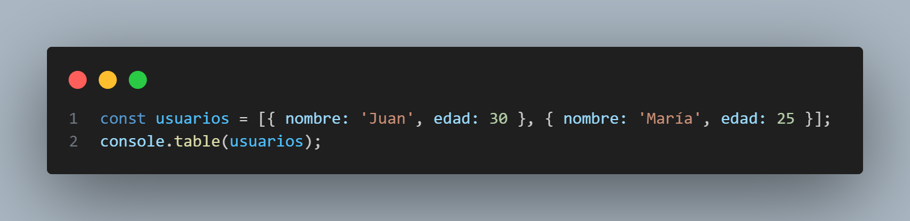
Estos son solo algunos de los métodos más comunes del objeto console, pero hay otros disponibles, como console.debug(), console.time(), console.group(), etc. El uso de console es una práctica valiosa para depurar y entender el flujo de ejecución de tu código durante el desarrollo.
Recuerda eliminar o comentar las declaraciones de console antes de lanzar tu aplicación en producción, ya que estas declaraciones pueden ralentizar la ejecución y mostrar información confidencial en la consola del navegador.
Objeto Date
El objeto Date en JavaScript se utiliza para trabajar con fechas y horas. Proporciona métodos para crear, manipular y formatear fechas.
Ejemplos de uso:
1. Obtener la fecha y hora actual:
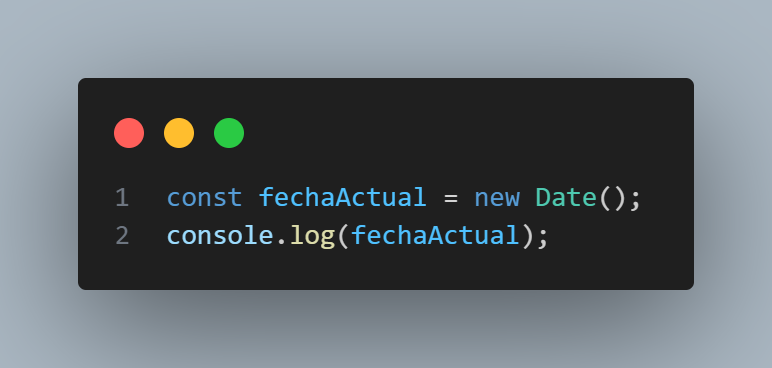
2. Crear una fecha específica:
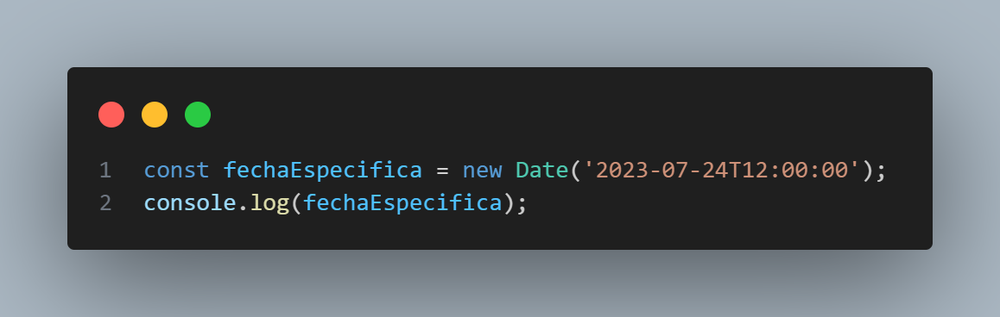
3. Obtener el año, mes y día de una fecha:
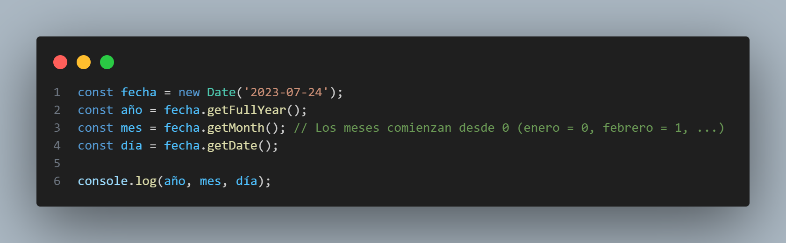
4. Obtener el día de la semana de una fecha:
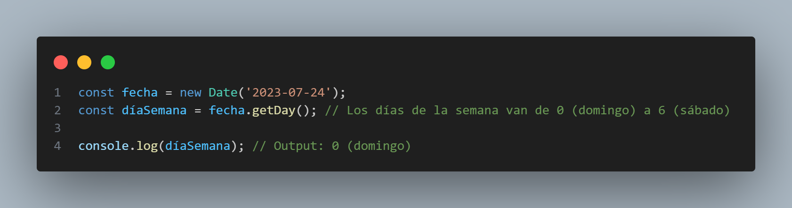
5. Formatear una fecha como una cadena de texto:
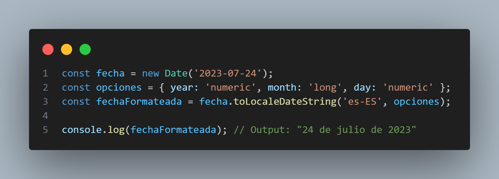
Estos son solo algunos ejemplos básicos del uso del objeto Date en JavaScript. El objeto Date también tiene métodos para realizar operaciones matemáticas con fechas, como sumar días, restar horas, etc. Es importante tener en cuenta que el objeto Date en JavaScript utiliza el horario local del usuario, por lo que puede haber diferencias en las fechas y horas dependiendo de la ubicación del usuario. Si necesitas trabajar con zonas horarias o fechas en formato UTC, hay métodos adicionales para ello en el objeto Date.
Objeto Math
El objeto Math en JavaScript es un objeto incorporado que proporciona propiedades y métodos para realizar operaciones matemáticas.
Ejemplos de uso:
1. Obtener el valor absoluto de un número:
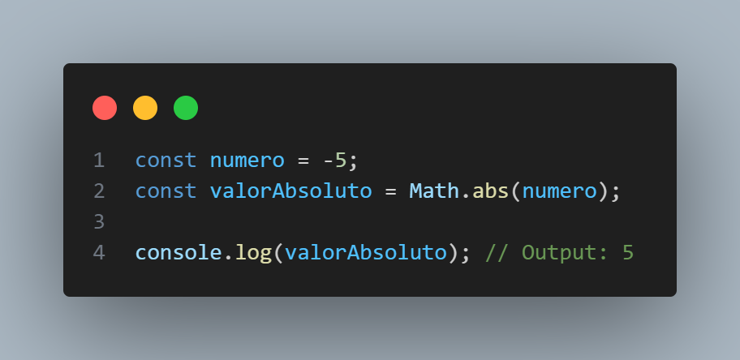
2. Redondear un número al entero más cercano:
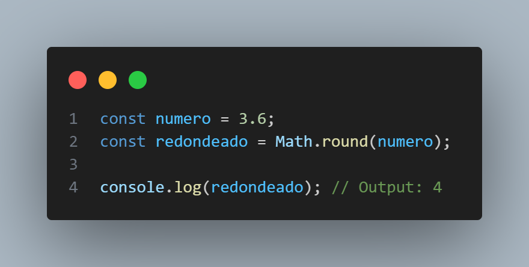
3. Obtener el número mayor entre varios números:
4. Obtener el número menor entre varios números:
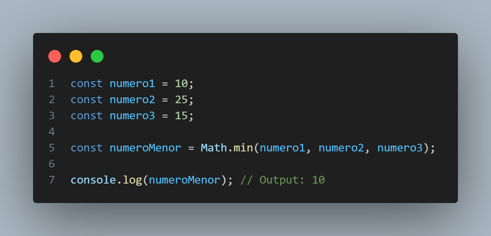
5. Generar un número aleatorio entre 0 (inclusive) y 1 (exclusivo):
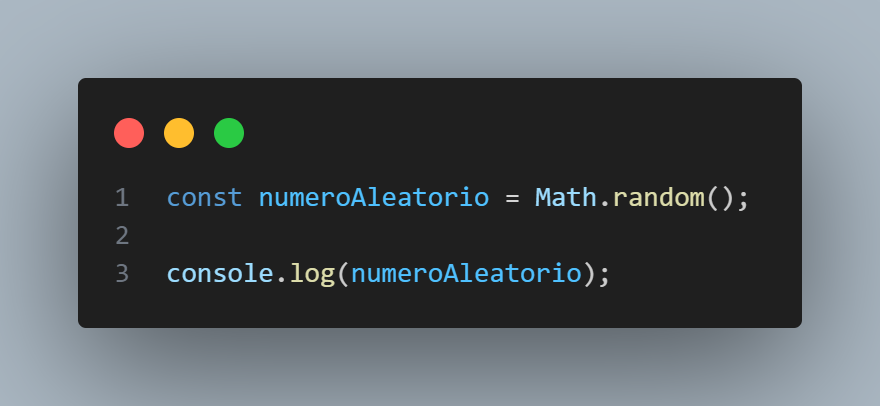
6. Obtener el valor de PI:
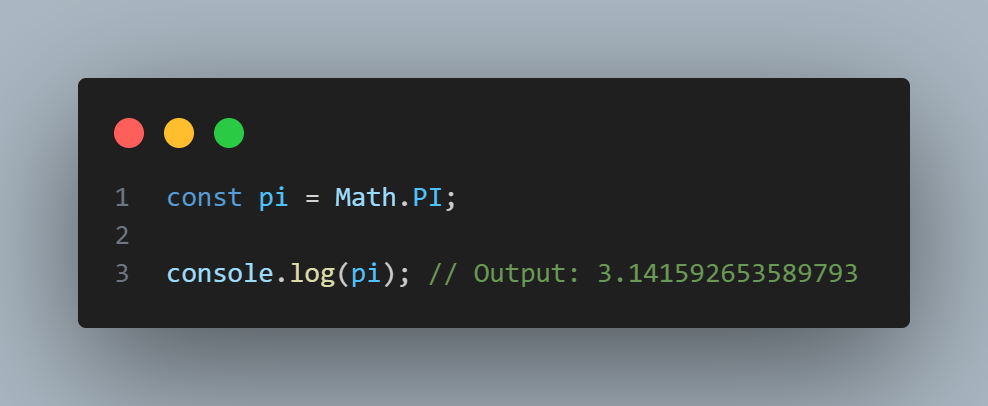
Estos son solo algunos ejemplos del uso del objeto Math en JavaScript. Además de estos, Math proporciona otros métodos y constantes matemáticas, como Math.sqrt() para calcular la raíz cuadrada de un número, Math.pow() para elevar un número a una potencia, Math.sin(), Math.cos(), Math.tan() para calcular funciones trigonométricas, entre otros. El objeto Math es una herramienta útil para realizar operaciones matemáticas complejas en JavaScript.
Operador de Cortocircuito
El operador de cortocircuito, también conocido como operador lógico de cortocircuito, es una característica de JavaScript que permite realizar evaluaciones lógicas eficientes en ciertas circunstancias.
Operador lógico && (AND lógico)
- Si el primer operando es false, el resultado será false, y la segunda expresión no se evaluará porque ya se sabe que el resultado será false.
- Si el primer operando es true, el resultado dependerá del valor de la segunda expresión. Si la segunda expresión también es true, el resultado será true. Si la segunda expresión es false, el resultado será false.
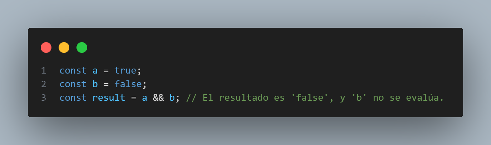
Operador lógico || (OR lógico)
- Si el primer operando es true, el resultado será true, y la segunda expresión no se evaluará porque ya se sabe que el resultado será true.
- Si el primer operando es false, el resultado dependerá del valor de la segunda expresión. Si la segunda expresión también es false, el resultado será false. Si la segunda expresión es true, el resultado será true.
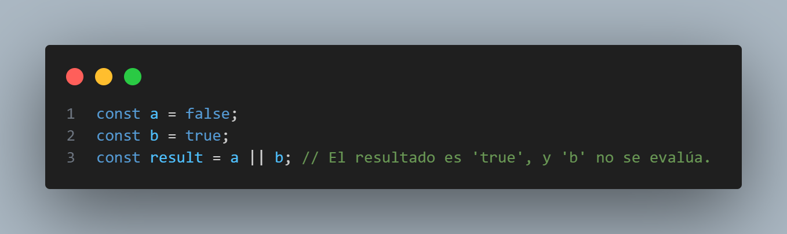
Es importante tener en cuenta que las expresiones que no son de tipo booleano también se evalúan en contexto de cortocircuito. En JavaScript, los valores que se consideran falsy son false, null, undefined, 0, NaN y una cadena vacía ''. Todos los demás valores, incluidos objetos y arreglos no vacíos, se consideran truthy.
El uso adecuado del operador de cortocircuito puede ayudar a mejorar la eficiencia y claridad del código, pero también es esencial comprender cómo funciona para evitar resultados inesperados.
alert, confirm y prompt
En JavaScript, `alert()`, `confirm()` y `prompt()` son funciones que se utilizan para interactuar con el usuario a través de cuadros de diálogo en el navegador.
1. Alert()
La función alert() muestra un cuadros de diálogo con un mensaje y un botón de "Aceptar". Es útil para mostrar mensajes informativos o alertas simples al usuario.
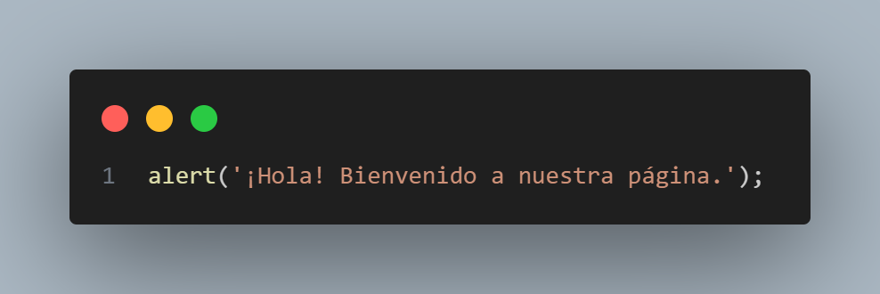
2. Confirm()
La función confirm() muestra un cuadro de diálogo con un mensaje, un botón de "Aceptar" y otro de "Cancelar". El usuario puede hacer clic en "Aceptar" o "Cancelar", y la función devuelve true si se selecciona "Aceptar" y false si se selecciona "Cancelar".
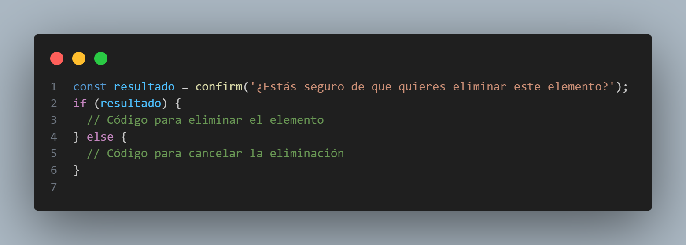
3. Prompt()
La función prompt() muestra un cuadro de diálogo con un mensaje, un campo de entrada de texto y dos botones: "Aceptar" y "Cancelar". El usuario puede ingresar un valor en el campo de entrada y hacer clic en "Aceptar" o "Cancelar". Si se selecciona "Aceptar", la función devuelve el valor ingresado por el usuario como una cadena de texto. Si se selecciona "Cancelar", la función devuelve null.
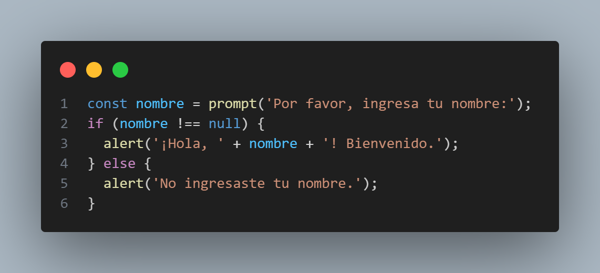
Es importante tener en cuenta que el uso de `alert()`, `confirm()` y `prompt()` puede interrumpir el flujo normal de la aplicación y bloquear la interacción del usuario hasta que se cierre el cuadro de diálogo. Por esta razón, es fundamental utilizar estas funciones con moderación y de manera adecuada para proporcionar una experiencia de usuario fluida y agradable.
Expresiones Regulares
En JavaScript, las expresiones regulares, también conocidas como regex o RegExp, son patrones que se utilizan para buscar y manipular cadenas de texto. Permiten realizar búsquedas avanzadas y operaciones de reemplazo de forma flexible y poderosa. Las expresiones regulares son objetos específicos de JavaScript y se crean utilizando la clase RegExp o utilizando la sintaxis literal entre barras diagonales //.
Metacaracteres comunes:
Las expresiones regulares utilizan caracteres especiales y metacaracteres para definir los patrones que se deben encontrar en las cadenas. Algunos de los metacaracteres comunes incluyen:
^: Representa el inicio de una cadena.
$: Representa el final de una cadena.
.: Representa cualquier carácter, excepto una nueva línea.
*: Representa cero o más ocurrencias del elemento anterior.
+: Representa una o más ocurrencias del elemento anterior.
?: Representa cero o una ocurrencia del elemento anterior.
[]: Representa una clase de caracteres, donde se busca un carácter que coincida con cualquiera de los caracteres dentro de los corchetes.
(): Agrupa elementos juntos y permite aplicar modificadores a un conjunto de caracteres.
Ejemplos de uso:
1. Buscar una palabra específica en una cadena:
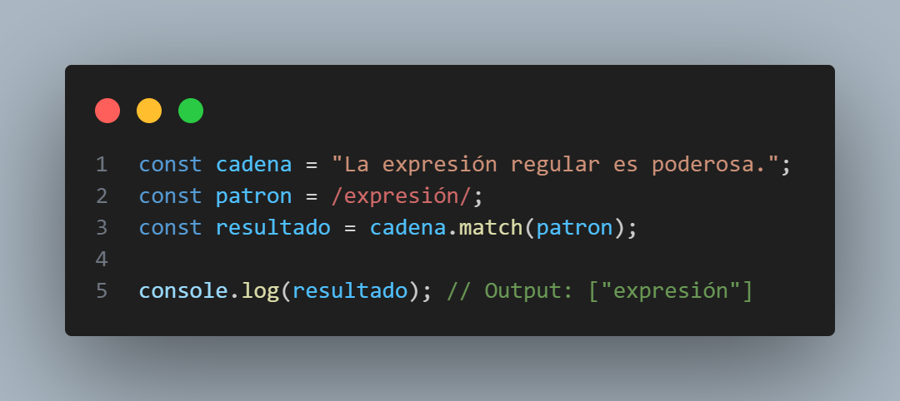
2. Reemplazar una palabra en una cadena:
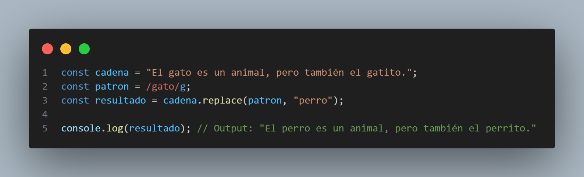
3. Validar un formato específico en una cadena (por ejemplo, un correo electrónico):
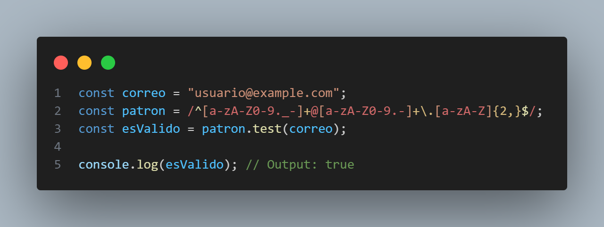
Estos son solo algunos ejemplos básicos del uso de expresiones regulares en JavaScript. Las expresiones regulares pueden volverse muy complejas y poderosas para realizar tareas avanzadas de búsqueda y manipulación de cadenas. Es una habilidad valiosa para cualquier desarrollador web que desee trabajar con cadenas de texto de manera efectiva y eficiente.
Funciones Anónimas Autoejecutables
Las funciones anónimas autoejecutables, también conocidas como IIFE (Immediately Invoked Function Expressions), son una construcción en JavaScript que permite definir y ejecutar una función al mismo tiempo. Estas funciones son útiles para encapsular código y evitar que las variables y funciones definidas en ellas contaminen el ámbito global del código.
Sintaxis:
Las IIFE se crean utilizando una función anónima envuelta entre paréntesis, seguida de otro par de paréntesis vacíos para invocar la función de inmediato.
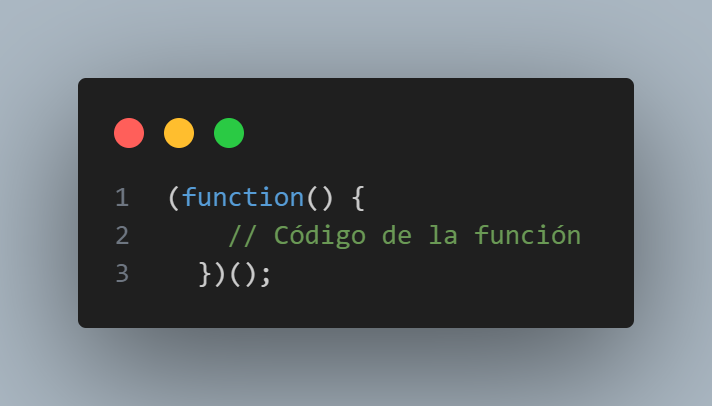
Ejemplo:
En este ejemplo, se define una función anónima autoejecutable que simplemente muestra un mensaje en la consola.
Uso en Módulos:
Las funciones anónimas autoejecutables también se pueden usar para crear módulos y evitar la contaminación del espacio de nombres global.
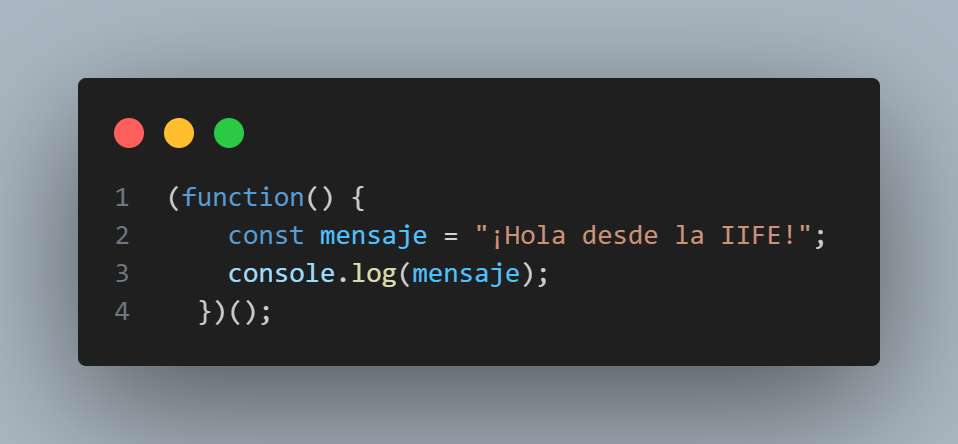
En este ejemplo, la IIFE crea un módulo que contiene variables y funciones privadas, así como una función pública que es accesible desde fuera de la IIFE.
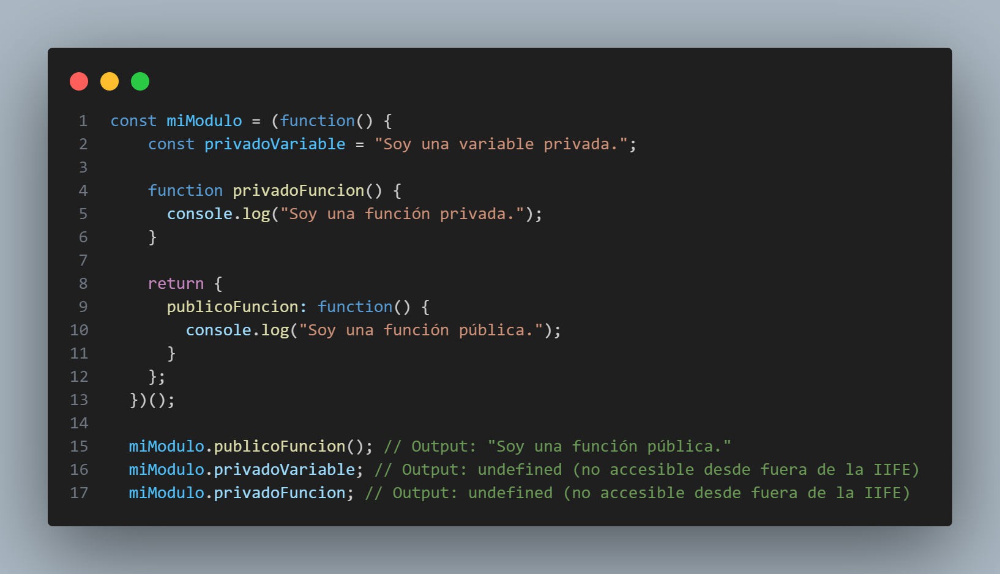
Las funciones anónimas autoejecutables son una técnica común en JavaScript para mantener un código más limpio, modular y protegido, y se utilizan en muchos proyectos y librerías populares.